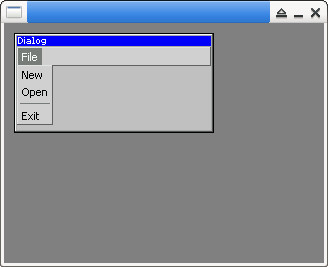
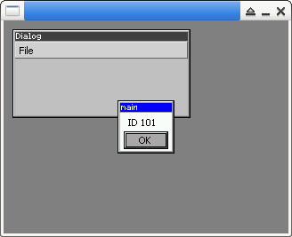

Steward
分享是一種喜悅、更是一種幸福
程式語言 - uC/GUI - Handle Menu Event
參考資訊：
https://github.com/piyushpandey013/ucGUI
https://github.com/yongzhena/ucgui-linux
main.c
#include <stdio.h>
#include <stdlib.h>
#include "GUI.h"
#include "MENU.h"
#include "MULTIPAGE.h"
static GUI_WIDGET_CREATE_INFO info[] = {
{ FRAMEWIN_CreateIndirect, "Dialog", 0, 10, 10, 200, 100, WM_CF_SHOW, 0 },
};
static int add_menu(MENU_Handle hMenu, MENU_Handle hSubMenu, const char *pText, U16 dwID, U16 dwFlags)
{
MENU_ITEM_DATA m = { 0 };
m.pText = pText;
m.hSubmenu = hSubMenu;
m.Flags = dwFlags;
m.Id = dwID;
MENU_AddItem(hMenu, &m);
return 0;
}
static int create_menu(WM_HWIN hParent)
{
MENU_Handle hMenu = 0;
MENU_Handle hMenuFile = 0;
hMenu = MENU_CreateEx(0, 0, 0, 0, WM_UNATTACHED, 0, MENU_CF_HORIZONTAL, 100);
hMenuFile = MENU_CreateEx(0, 0, 0, 0, WM_UNATTACHED, 0, MENU_CF_VERTICAL, 0);
add_menu(hMenuFile, 0, "New", 101, 0);
add_menu(hMenuFile, 0, "Open", 102, 0);
add_menu(hMenuFile, 0, 0, 0, MENU_IF_SEPARATOR);
add_menu(hMenuFile, 0, "Exit", 103, 0);
add_menu(hMenu, hMenuFile, "File", 0 ,0);
FRAMEWIN_AddMenu(hParent, hMenu);
}
static void WndProc(WM_MESSAGE* pMsg)
{
char buf[255] = { 0 };
WM_KEY_INFO* pKeyInfo = NULL;
MENU_MSG_DATA *pMenuInfo = NULL;
switch (pMsg->MsgId) {
case WM_INIT_DIALOG:
create_menu(pMsg->hWin);
break;
case WM_MENU:
pMenuInfo = (MENU_MSG_DATA *)pMsg->Data.p;
switch (pMenuInfo->MsgType) {
case MENU_ON_ITEMSELECT:
if (pMenuInfo->ItemId == 103) {
GUI_EndDialog(pMsg->hWin, 0);
break;
}
sprintf(buf, "ID %d", pMenuInfo->ItemId);
GUI_MessageBox(buf, "main", GUI_MB_OK);
break;
}
break;
default:
WM_DefaultProc(pMsg);
}
}
int main(int argc, char *argv[])
{
GUI_Init();
GUI_SetBkColor(GUI_GRAY);
GUI_Clear();
GUI_ExecDialogBox(info, GUI_COUNTOF(info), WndProc, 0, 0, 0);
return 0;
}
編譯、執行
$ gcc main.c -o main libucgui.a -IGUI_X -IGUI/Core -IGUI/Widget -IGUI/WM -lSDL $ ./main

